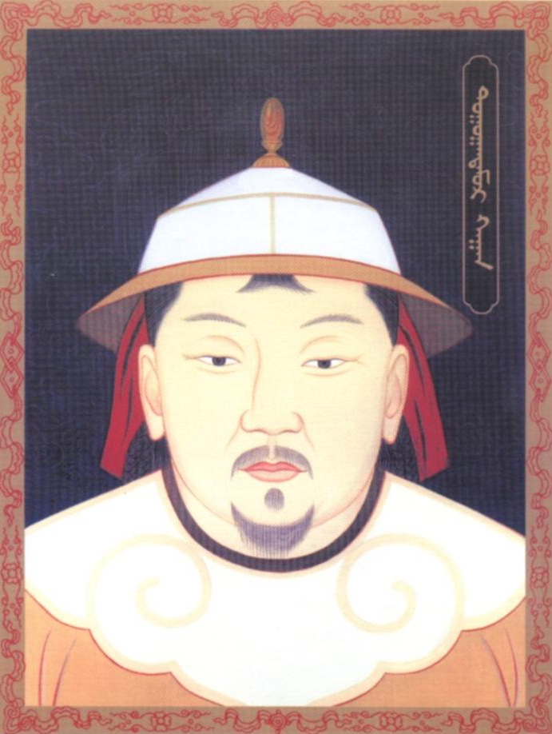

El huérfano de Zhao(赵氏孤儿) es una obra escrita por Jì Jūnxiáng en el siglo XIII, en el que se conoce como perio Yuán, que tiene el mismo nombre que la moneda actual china, también utiliza el mismo caracter 元. La obra relata la venganza del hijo huérfano de la familia Zhao, y como este consigue recuperar las posesiones que pertenecieron a su familia. Los Zhao eran una importante familia que acaban siendo persidos por un ministro chino, a pesar de ello, toda la familia se sacrifica para poder salvar la vida de su hijo recien nacido, que finalmente será criado por el médico que lo vió nace. El huérfano de los Zhao descubrirá su pasado, e iniciara una importante trama de venganza que podrás ver en los teatros del Vallès.
El autor, Jì Jūnxiáng, es un importante escritor del periodo Yuán. Escribio gran cantidad de obras que han marcado la cultura popular china. El mismo se crió en una importante familia china, con miembros dentro del ejército y gobierno, y uso su experiencia para escribir la obra del huérfano de Zhao. De hecho, incluso su imagen recuerda enormemente a uno de los emperadores que goberno en el periodo Yuán. Aunque este autor no siempre gozó de prestigio, su momento más bajo se produjo durante la revolución china.
Deben prohibirse libros que incitan a valores y estilos de vida contrarevolucionarios, como El huérfano de Zhao
Mao Zedong
Esta cita de Mao Zedong se produjo en un contexto donde se perseguía cualquier libro y persona que pudiera ser considerado contrarevolucionario, durante la revolución cultural. La unión de Jì Jūnxiáng con las élites chinas de la época y la trama de sus obras le valieron ser censurado durante años. Actualmente la opinión que hay sobre el autor es muy diferente, la obra es inmensamente popular en China, se ha representado en los teatros más importantes y es común que los escolares chinos representen la obra en los colegios.
La popularidad de la obra va más allá de las fronteras chinas. Goza de gran popularidad en todo el Asia Oriental, en especial en Corea, donde los escolares también suelen estudiarla y representarla durante su época escolar. La popularidad no se limita solo a Asia, en Occidente también es popular, no llega a los niveles de Asia, pero aun así la obra es conocida y ha llegado a representarse en grandes teatros europeos y norte americanos. En occidente existen incluso versiones alternativas de la obra, mucho más occidentalizadas. Entre los teatros occidentales más importantes donde se ha representado tenemos: